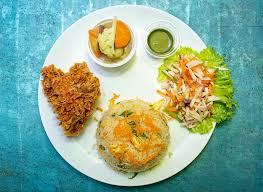
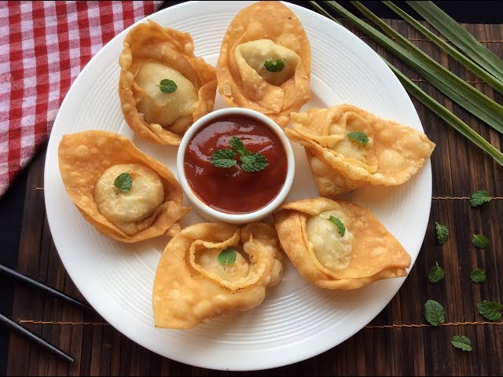
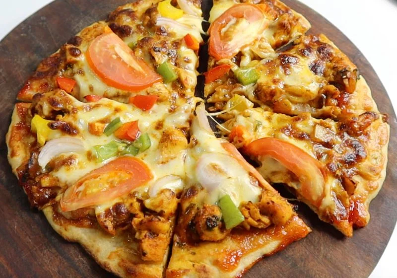
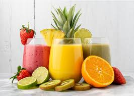

Food Categories
Barger

Our burger is a sandwich consisting of a cooked patty of ground meat, usually beef, placed inside a sliced bun or bread roll.
Set Menu
Our set menu offers a multi-course meal for a single, fixed price, with a limited selection of dishes chosen by the chef.
Onthon
A small savory dumpling typically filled with meat, seafood, or vegetables.
Pizza
Our pizza is an Italian-inspired dish made with a baked, flat bread crust, a savory tomato-based sauce, and a generous topping of melted mozzarella cheese.
Biriyani

Our biriyani is a flavorful mixed rice dish, prepared with long-grain basmati rice, aromatic spices, and your choice of meat (like chicken or mutton) or vegetables.
Juices
Our juices are refreshing beverages made by pressing or extracting the liquid from fresh fruits and vegetables.